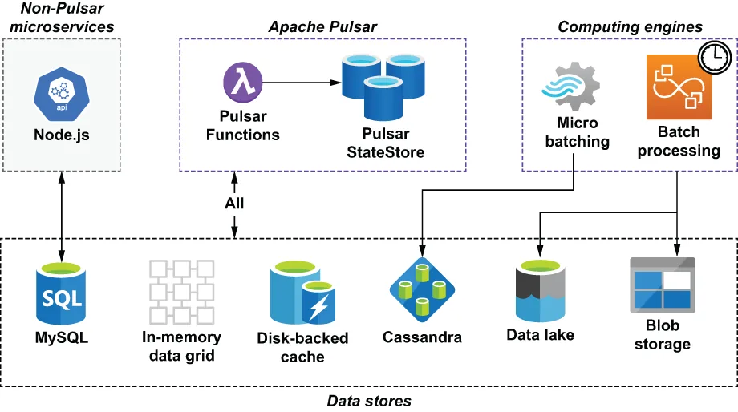

The GottaEat application that we have been developing thus far is hosted within the context of a much larger enterprise architecture that consists of multiple technologies and data storage platforms, as shown in figure 10.1. These data storage platforms are used by multiple applications and computing engines within the GottaEat organization and act as a single source of truth for the entire enterprise.
到目前为止我们一直在开发的这个 GottaEat 应用，被托管在一个规模大得多的企业架构语境之中——该架构由多种技术和数据存储平台构成，如图 10.1 所示。这些数据存储平台被 GottaEat 组织内部的多个应用和计算引擎所使用，并充当着整个企业的唯一事实来源（single source of truth）。
As you can see, Pulsar Functions can access data from a variety of data sources, from low-latency in-memory data grids and disk-backed caches to high-latency data lakes and blob storage. These data stores allow us to access information supplied by other applications and computing engines. For instance, the GottaEat application we have been developing has a dedicated MySQL database it uses to store customer and driver information, such as their login credentials, contact information, and home address. This information is collected by some of the non-Pulsar microservices shown in figure 10.1 that provide non-streaming services, such as user login, account update, etc.
可以看到，Pulsar Functions 能够从各种各样的数据源访问数据——从低延迟的内存数据网格（IMDG）和磁盘支撑型缓存，一直到高延迟的数据湖和对象（blob）存储。这些数据存储让我们得以访问由其他应用和计算引擎所提供的信息。举例来说，我们一直在开发的这个 GottaEat 应用就有一个专用的 MySQL 数据库，用来存放客户与司机的信息，例如他们的登录凭据、联系方式和家庭住址。这些信息是由图 10.1 中所示的那部分非 Pulsar 微服务采集的——它们提供的是诸如用户登录、账户更新等非流式服务。

Figure 10.1 The enterprise architecture of the GottaEat organization will be comprised of various computing engines and data storage technologies. Therefore, it is critically important that we can access these various data repositories from our Pulsar functions.
图 10.1 GottaEat 组织的企业架构将由各种各样的计算引擎与数据存储技术构成。因此，能否从我们的 Pulsar 函数访问这些不同的数据存储库，是至关重要的。
Within the GottaEat enterprise architecture there are distributed computing engines, such as Apache Spark and Apache Hive, which perform batch processing of extremely large datasets stored inside the data lake. One such dataset is the driver location data, which contains the latitude and longitude coordinates of every driver that is logged into our application. The GottaEat mobile application automatically records the driver’s location every 30 seconds and forwards it to Pulsar for storage in the data lake. This dataset is then used in the development and training of the company’s machine learning models. Given sufficient information, these models can accurately predict various key business metrics, such as estimated delivery times of placed orders or the areas within a city most likely to have the most food orders in the next hour, so we can position drivers accordingly. These computing engines are scheduled to run periodically to calculate various data points that are required by the machine learning models and store them inside the Cassandra database so they can be accessed by the Pulsar functions that are hosting the ML models to provide real-time predictions.
在 GottaEat 的企业架构内部，存在着诸如 Apache Spark 和 Apache Hive 这样的分布式计算引擎，它们对存放在数据湖中的超大规模数据集执行批处理。其中一个这样的数据集就是司机位置数据，它包含了每一位登录进我们应用的司机所处的经纬度坐标。GottaEat 移动应用会每 30 秒自动记录一次司机的位置，并把它转发给 Pulsar，以便存入数据湖。这个数据集随后会被用于公司机器学习模型的开发与训练。只要信息足够充分，这些模型就能准确预测各种关键业务指标，例如已下订单的预计送达时间，或者一座城市内在下一小时最有可能产生最多餐品订单的区域——这样我们就能据此调度司机的位置。这些计算引擎被设定为周期性运行，以计算机器学习模型所需的各个数据点，并把它们存进 Cassandra 数据库，从而让那些承载着 ML 模型、负责提供实时预测的 Pulsar 函数能够访问到它们。